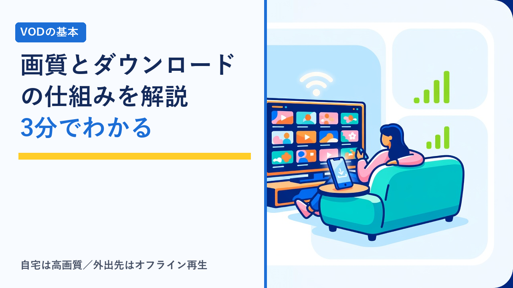
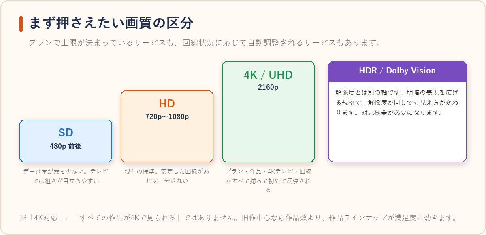
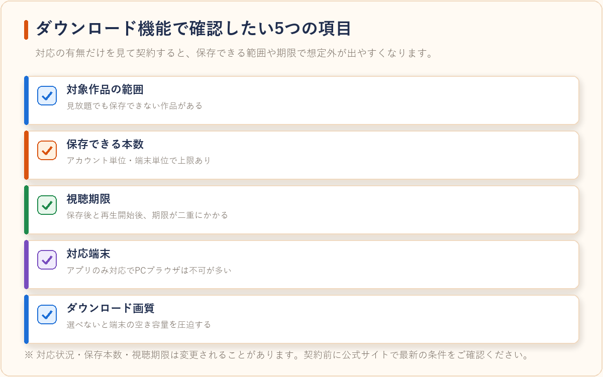
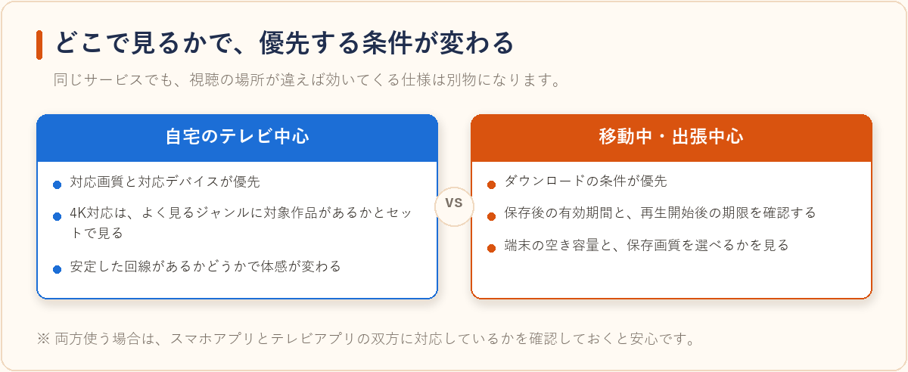

VODサービスの画質・ダウンロード機能を比較、オフライン視聴に強いのはどれ
2026-08-22 更新

通勤電車や飛行機の中、通信量を節約したいときに便利なのが、動画配信サービス（VOD）のダウンロード機能です。ただし「ダウンロード対応」と書かれていても、保存できる作品の範囲や本数、視聴できる期限はサービスごとに大きく異なります。画質についても、同じ「HD対応」でも実際に高画質で見られるかは回線と端末次第です。この記事では、画質とダウンロード機能の仕組みを客観的に整理し、オフライン視聴を重視する場合にどこを見て選べばよいかをまとめます。
まず押さえたい画質の区分
VODの画質はおおむね次のように区分されます。プランによって上限が決まっているサービスもあれば、全プラン共通で回線状況に応じて自動調整されるサービスもあります。

| 画質の区分 | おおよその解像度 | 特徴と必要な環境 |
|---|---|---|
| SD（標準画質） | 480p 前後 | データ量が最も少ない。スマホの小さい画面なら気になりにくいが、テレビでは粗さが目立ちやすい |
| HD（高画質） | 720p〜1080p | 現在の標準的な画質。多くの作品・端末で対応しており、安定した回線があれば十分きれい |
| 4K / UHD | 2160p | 対応プラン・対応作品・4Kテレビ・高速回線がすべて揃って初めて反映される。対応作品は一部に限られることが多い |
| HDR / Dolby Vision | 解像度とは別軸 | 明暗の表現を広げる規格。解像度が同じでも見え方が変わる。対応機器が必要 |
注意したいのは、「4K対応」＝「すべての作品が4Kで見られる」ではない点です。多くの場合、4K配信されるのは一部のオリジナル作品や新しめのタイトルに限られます。旧作中心に見るなら、4K対応の有無より作品ラインナップの方が満足度に効くこともあります。
ダウンロード機能で確認したい5つの項目
ダウンロード（オフライン視聴）は、対応の有無だけでなく、次の条件をセットで確認しておくと契約後のギャップが減ります。

| 確認項目 | 何が違ってくるか |
|---|---|
| 対象作品の範囲 | 権利の都合で、見放題対象でもダウンロード不可の作品がある。ライブ配信や一部の独占配信は対象外になりやすい |
| 保存できる本数 | 1アカウントあたり、または1端末あたりの上限が設定されていることがある |
| 視聴期限 | ダウンロード後○日、再生開始後○時間といった二重の期限が設定されている場合がある |
| 対応端末 | スマホ・タブレットのアプリのみ対応で、PCブラウザでは保存できないサービスが多い |
| ダウンロード画質 | 画質を選べるかどうかで容量が大きく変わる。選べない場合は端末の空き容量に注意 |
特に見落としやすいのが視聴期限の二重構造です。「保存から30日間有効」でも、一度再生を始めると「48時間以内に見終える必要がある」といった条件が加わることがあります。長期の旅行前にまとめて保存する場合は、この点を確認しておくと安心です。
① 保存してからの有効期間
「ダウンロード後◯日間」といった形で、保存したファイルそのものに期限が設定されています。見ないまま放置すると期限切れになります。
② 再生を始めてからの期限
①とは別に「再生開始から◯時間以内」という条件が加わることがあります。長期の旅行前にまとめて保存する場合は、こちらも要確認です。
サービスの型ごとのオフライン視聴の傾向
ダウンロード機能の充実度は、サービスの設計思想と連動する傾向があります。
| サービスの型 | オフライン視聴の傾向 | 相性のよい使い方 |
|---|---|---|
| 総合型の見放題VOD | アプリでのダウンロードに対応する例が多い。対象作品も比較的広い | 通勤・出張で映画やドラマをまとめ見する |
| アニメ・ジャンル特化型 | シリーズ一括保存など、連続視聴向けの導線が用意されていることがある | 長編シリーズを移動中に追いかける |
| 編成型（放送系）のサービス | ライブ配信が中心の枠は保存対象外になりやすい | 自宅の安定回線でリアルタイム視聴する |
| 広告付き・低価格プラン | プランによってダウンロード非対応・画質上限ありの場合がある | 自宅Wi-Fi環境でのながら見が中心 |
編成型サービスの考え方についてはWOWOWオンデマンドはどんな人におすすめ？他のVODとの違いまとめで、アニメ中心の選び方はアニメ好きにおすすめのVODサービスはどれ？作品ラインナップの傾向比較で整理しています。
外出先のWi-Fiで見るときの注意
ダウンロードしておけば再生自体はオフラインで完結しますが、実際には外出先で保存し直したり、アプリにログインし直したりする場面が出てきます。このとき使うことになるのが、カフェやホテル、空港などの公衆Wi-Fiです。
- 接続する前に、施設が掲示している正式なネットワーク名と一致しているかを確認する（名前は誰でも自由に付けられるため、似た名前が並ぶことがある）
- 端末のファイル共有・ネットワーク探索をオフにしておく
- 大きなデータのダウンロードは、可能なかぎり自宅のWi-Fiで済ませておく
- パスワードの再入力や支払い情報の更新といった操作は、公衆Wi-Fi上では避ける
いまのサービスはほぼHTTPSに対応しているため、やり取りの中身が読み取られるリスクは以前より下がっています。ただしHTTPSが守るのは通信の「中身」までで、どこに接続したかという情報や、端末側の設定の不備までは対象外です。この線引きと、通信そのものを暗号化するVPNという選択肢については公衆Wi-Fiは安全？カフェ・ホテルで動画を見る前に知っておきたい通信の話で整理しています。
選び方のポイント
- 「どこで見るか」から逆算する：自宅のテレビ中心なら画質と対応デバイス、移動中中心ならダウンロード条件が優先です。両方使うなら、アプリとテレビアプリの双方に対応しているかを確認しましょう。
- 4K対応は作品数とセットで見る：対応プランに加入しても、対象作品が少なければ体感は変わりません。よく見るジャンルに4K配信作品があるかを確認するのが現実的です。
- 端末の空き容量を先に確認する：高画質で保存すると1本あたりの容量が大きくなります。保存画質を選べるサービスなら、移動中はSD相当に落とすと本数を稼げます。
- 視聴期限の条件を確認する：保存後の有効期間と、再生開始後の期限は別に設定されていることがあります。長期の旅行や出張で使うなら要チェックです。
- 家族で使うなら台数制限も見る：ダウンロードは同時視聴とは別枠で端末数の上限が設定される場合があります。詳しくは動画配信サービスの家族アカウント・同時視聴ルールまとめを参考にしてください。
- 無料体験で実際の使い勝手を試す：画質の見え方も保存の手間も、使ってみて初めて分かる部分です。体験期間があるサービスは動画配信サービスの無料体験まとめ比較で比較できます。継続しない場合はVODサービスの解約忘れを防ぐコツと注意点まとめもあわせてご覧ください。

よくある質問
ダウンロードした動画は解約後も見られますか？
一般的には見られません。多くのサービスでは、契約が有効であることを前提にダウンロード作品の再生が許可されており、解約するとアプリ内の保存データも再生できなくなります。オフラインで見たい作品がある場合は、契約期間中に視聴を終えられるスケジュールで保存するのが確実です。
スマホの通信量を抑えるにはどうすればよいですか？
基本は、Wi-Fi環境でダウンロードしてから外出先で再生する使い方です。加えて、アプリ側に「Wi-Fi接続時のみダウンロード」「モバイル回線では低画質で再生」といった設定が用意されていることが多いため、契約直後に設定を見直しておくと通信量の想定外の消費を防げます。
4K対応プランにすれば必ず画質は良くなりますか？
そうとは限りません。4K画質での再生には、対応プラン・4K配信されている作品・4K対応の表示機器・十分な通信速度がすべて揃う必要があります。どれか一つでも条件を満たさない場合は、自動的にHDなど下位の画質で再生されます。手持ちのテレビや回線の条件を先に確認しておくとよいでしょう。